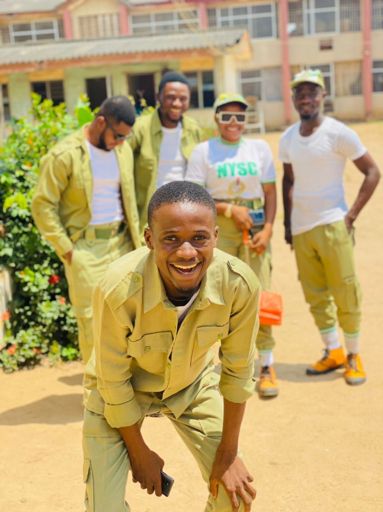

Oseni Olayemi Olatunji
- Williams Estate, Ogba, Lagos State
PROFESSIONAL PROFILE
Result-driven computer engineer with experience in
programming, hardware and software, including
installation, configuration management, troubleshooting
of computer-related issues, and support to obtain maximum
performance of the organization. Professional skills in team
building, problem-solving, and relationship building.
DS Adegbenro ICT Polytechnic, Itori-Ewekoro, Ogun State – Graduate Assistant (NYSC Associate) 2020 – 2021
- Supported department faculty with administrative assistance, as well as curriculum and research support.
- Taught undergraduate students on understanding concepts from their course.
- Provided assistance with event planning and supervision of undergraduate student workers.
- Contributed to development of new materials for department courses.
- Helped with the implementation and assessment of assigned projects, program.
- Liaised between professors and students to provide information on subject matter, assignments and class expectations.
Gadget Store Limited, Ikeja, Lagos– System Administrator and Engineering (IT) February – November 2018
- Supervised the configuration of switches, routers and platforms.
- Made purchase recommendations for repair items and assisted in purchase decisions for new equipment.
- Analyzed company’s system and infrastructure and made recommendations, such as suggesting appropriate hardware, software and systems.
- Tested, debugged, and troubleshoot compatibility issues involving software systems
- Monitored existing software to correct errors, to adapt it to new hardware and to upgrade interfaces and improve performance
EDUCATION
Olabisi Onabanjo University Ago-Iwoye, Ogun State– Bachelor of Science – Computer Engineering 2014 – 2019
Livingstone Model College, Lagos State– Senior Secondary School Leaving Certificate 2006 – 2012
PROFESSIONAL CERTIFICATION
Institute of Information Technology, Ikeja, Lagos State– Diploma in Computer Networking (CompTIA N+) 2020
PROFESSIONAL SKILLS
- Good comprehension of technical languages; HTML and CSS.
- Strategic planning skill with great ability to thrive under mild pressure.
- Above average networking knowledge and system administrator
- Debugging and troubleshooting involving software systems.
- Adaptability with excellent planning and execution skills and works well within the constraints of tight deadlines.
- Administrative writing and communication skills to handle correspondence and financial reporting in a professional manner during meetings.
- High interpersonal communication skills to establish rapport and build trust with clients
- Ability to teach, emotional intelligence, goal attainment and listening skill.
REFERENCES
Engr. Oyelakin Eniola
Civil Engineer, Step Development Limited, Lagos.
+2347030851464
